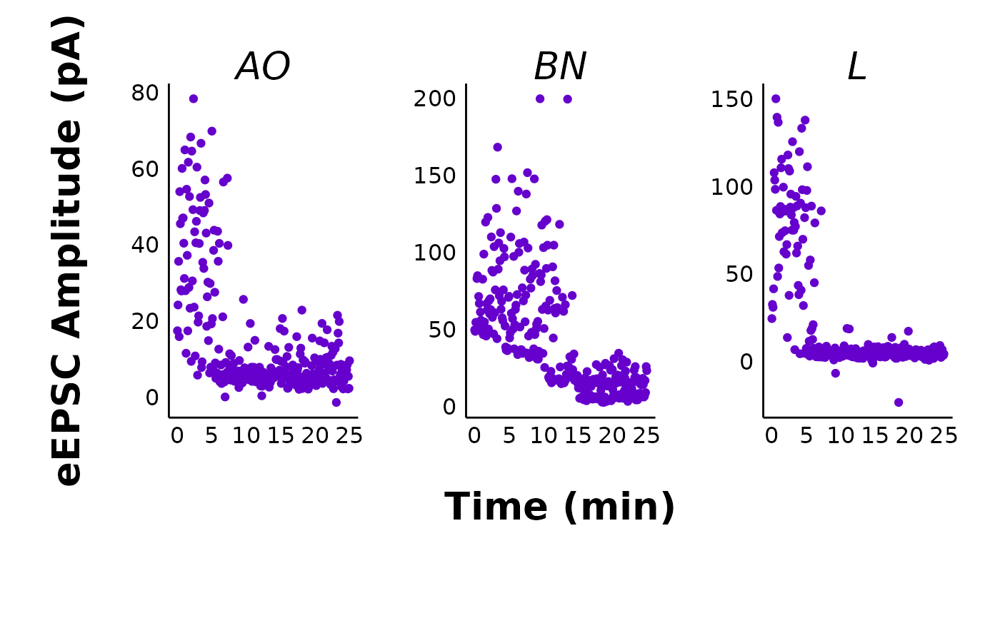
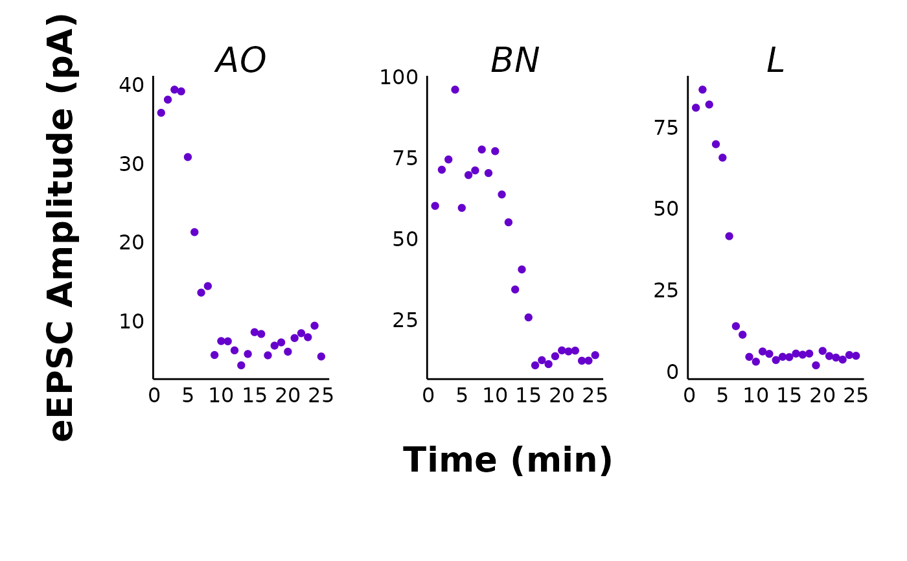

This function provides a useful way to quickly plot all data for a specific treatment and sex in one facet plot. This can be helpful if you want to create a display of the different treatments.
Usage
make_facet_plot(
data,
plot_category,
plot_treatment,
plot_sex,
pruned = "no",
current_type = "eEPSC",
y_variable = "P1",
x_label = "Time (min)",
treatment_colour_theme,
ggplot_theme = patchclampplotteR_facet_theme()
)Arguments
- data
A dataframe containing the raw evoked current data generated from
make_normalized_EPSC_data(). Ifpruned = "yes"you must use the$individual_cellscomponent of a pruned dataset.- plot_category
A numeric value specifying the category, which can be used to differentiate different protocol types. In the sample dataset for this package,
plot_category == 2represents experiments where insulin was applied continuously after a 5-minute baseline period.- plot_treatment
A character value specifying the treatment you would like to plot (e.g.
"Control").plot_treatmentrepresents antagonists that were present on the brain slice, or the animals were fasted, etc.- plot_sex
A character value ("Male" or "Female") corresponding to the sex you would like to plot.
- pruned
A character value (
"yes"or"no") specifying if the data are pruned. The plot will then present the data as means with error bars.- current_type
A character describing the current type. Allowed values are
"eEPSC"or"sEPSC".- y_variable
A character value specifying the variable to be plotted on the y-axis. For evoked currents (
current_type = "eEPSC"), the available y_variables are"P1","P1_transformed","mean_P1"and"PPR". Note: If you select"mean_P1", you must set theprunedargument to"yes". For spontaneous currents (current_type = "sEPSC"), the available y_variables are"amplitude"or"frequency".- x_label
A character value specifying the x-axis label. Defaults to "Time (min)".
- treatment_colour_theme
A dataframe containing treatment names and their associated colours as hex values. See sample_treatment_names_and_colours for an example of what this dataframe should look like.
- ggplot_theme
The name of a ggplot theme or your custom theme. This will be added as a layer to a ggplot object. The default is
patchclampplotteR_theme(), but other valid entries includetheme_bw(),theme_classic()or the name of a custom ggplot theme stored as an object.
Details
I have found it helpful to use this with knitr's RMarkdown features to create an interactive HTML page with the raw plots from all my cells, an interactive summary table (make_interactive_summary_table()), and summary plots (plot_summary_current_data()) for all treatments. This makes it easier to review cells while preparing presentations.
If you are using make_facet_plot() within an RMarkdown document, you will need to change the fig.height and fig.width options.
(Taken from the documentation for get_fig_height()): Set fig.width = 14 and fig.height = get_fig_height(...). Replace the ... with the correct category, treatment and sex you'd like to plot. Plot only one facet plot per chunk.
Examples
# Raw eEPSC facet plots
make_facet_plot(sample_raw_eEPSC_df,
plot_category = 2,
plot_treatment = "Control",
plot_sex = "Male",
pruned = "no",
current_type = "eEPSC",
y_variable = "P1",
treatment_colour_theme = sample_treatment_names_and_colours,
ggplot_theme = patchclampplotteR_facet_theme()
)

# Pruned eEPSC facet plots
make_facet_plot(sample_pruned_eEPSC_df$individual_cells,
plot_category = 2,
plot_treatment = "Control",
plot_sex = "Male",
pruned = "yes",
current_type = "eEPSC",
y_variable = "mean_P1",
treatment_colour_theme = sample_treatment_names_and_colours,
ggplot_theme = patchclampplotteR_facet_theme()
)
